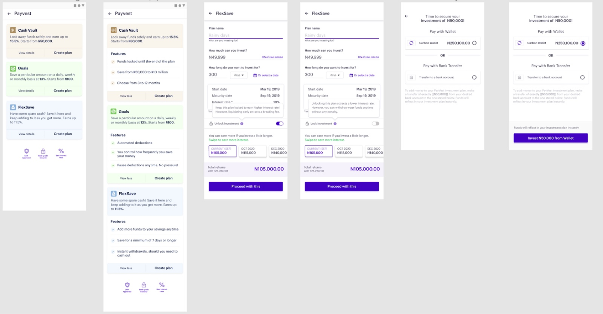
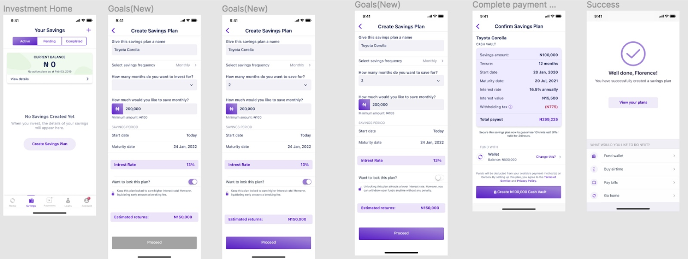
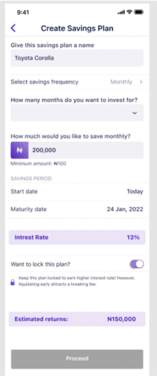
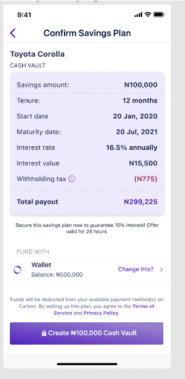
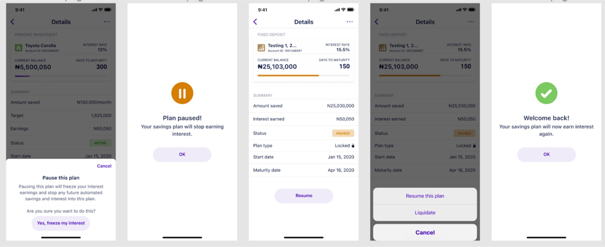
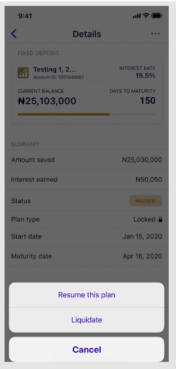
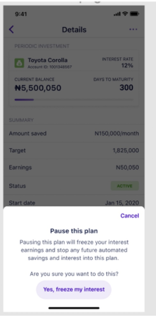

Project Overview
Role: UX Writer.
Client: Carbon MFB.
Stakeholders: Product Designer, Product Managers, Scrum Team, and Compliances.
This is one of my very firsts when it comes to In-App UX Writing. So, in the later parts of this project, I have highlighted some things I would have done differently if I did this same work today.
Problem
Carbon was previously a lending app that is transitioning into a fully digital bank. Part of its offerings include high-interest savings. The major challenge for this project, however, was that the previous Savings flow wasn't clear to the user, causing low creation of savings plans on the app. Many users also had doubts about using the app.
My role as the designated UX writer on the project involved creating a microcopy flow that ensured users got an onboarding experience that was easy to understand and transparent, especially since investments in the country can be usually frowned upon due to the many scam stories around.

Old Savings Flow
For the messaging in the entire flow, I ensured they were as informative as possible and actionable, making it straightforward for the user to save money in record time.
UX Writing Process
- I joined user research sessions with the designers on the project.
- I painstakingly looked at what competitors were doing regards retail savings.
- Outlined the flow of information.
Creating a new flow for the savings plan

Flow for when a customer creates a Savings plan
Now, I’ll explain how I approached the UX writing for each of the screens in the flow above. There are 6 screens in total.

In the previous flow, there was no context given to the customer to let them know there’s a minimum amount they can save. It only appeared after the customer had entered an amount below the threshold. To save the customer time and enable a more seamless process, in the second screen of the new flow, I used a hint to inform the customer that there’s a minimum amount they can save on the Carbon app.
We also ensured that it was clear that users can choose to lock plans or not. One of the feedback from research exercises was complaints about not being able to access funds when in fact they had locked their funds till a certain date.

The 5th screen above shows all the details of their investment so that they are well informed.
(In retrospect, I would not rely on just this screen since it disappears once the customer leaves the page. I would add an email in this flow that is triggered once the customer clicks on “Create Cash Vault. This is so that the user can reference it anytime).
Creating a new flow for pausing a Savings Plan

Flow for when a customer pauses a Savings plan
Users requested the ability to temporarily pause saving when they can't continue, without stopping altogether. I helped create the text for the screens that implement this feature, including explanations of the consequences of pausing, such as not earning interest during the pause.
For the modal in the 4th screen

In retrospect, I won't use the word 'liquidate' in the copy as it may be too technical for some set of customers. I'd replace it with one of "Cancel Savings" or "Withdraw your savings" as they're more direct and easier to interpret.
For the modal in the 1st screen

In retrospect, I would reduce the text in the pop-up on the first screen and write something like "You will be unable to earn interest on this plan until you resume again." CTA: "Yes, pause my savings".
It's shorter and less scary. I need to also respect that the saver knows what they're doing.
Outcome
Reduction in savings-related customer support queries
As a result of having a more understandable UX flow, the customer experience team saw fewer calls and messages related to savings.
Increase in turnover
Previously, the team had been doing an average of N500 million in savings monthly. When we launched the new flow, the following month saw us do N700 million and in the following month, almost a N1 billion in savings.